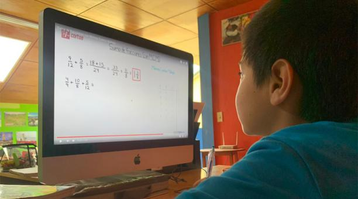
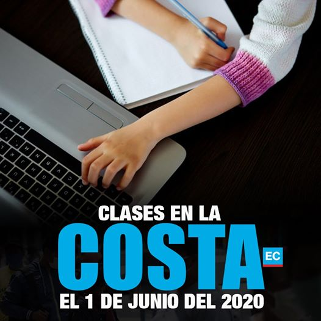

Desde aquel 12 de marzo, cuando el presidente de la República, Lenín Moreno, declaró emergencia sanitaria en todo el país, con el propósito de evitar la propagación del coronavirus, uno de los sectores más afectados fue el de la educación, ya que se suspendió toda actividad académica en escuelas, colegios y universidades.
Por tal motivo, la mayoría de establecimientos educativos se vieron en la obligación de habilitar diferentes plataformas para los estudiantes, con el propósito de que no pierdan muchas horas de estudio.
Las organizaciones Unicef y Unesco resaltaron que en contextos de emergencia, como la que está viviendo el país frente a la pandemia COVID-19, los Estados deben hacer su máximo esfuerzo para velar por el acceso universal y sin discriminación a la educación de los niños, niñas, adolescentes y adultos que estudian.
Para ello, se escudan en los instrumentos internacionales y el artículo 26 de la Constitución ecuatoriana, que refiere que “la educación es un derecho de las personas a lo largo de su vida y un deber ineludible e inexcusable del Estado”.
“Suspender la educación implica la interrupción del sentido de normalidad y regularidad que favorece el desarrollo y la estabilidad socioemocional de la población en contexto de crisis”, subrayaron ambas instituciones en un comunicado.
Recalcaron que el impacto de la emergencia que afronta el Ecuador por el coronavirus podría ser más grave si la educación se detiene.Además sugirieron que los docentes mantengan un contacto permanente con los estudiantes y sus familias, de manera remota, con el objetivo de favorecer la cohesión social, prevenir la violencia intrafamiliar y asegurar la continuidad del aprendizaje.
El acceso a Internet ha sido una de las dificultades para la educación virtual en Ecuador en el contexto de la continuidad del año lectivo a distancia para proteger a la comunidad educativa de la pandemia del covid-19. Así lo analizaron el ministro de Telecomunicaciones
Michelena anunció que se trabaja en alternativas como llevar Internet satelital a lugares de difícil acceso. Así se conseguiría una penetración del 90% en todo el territorio "con costos mucho más bajos", dijo. Complementariamente, sostuvo, está implementación de la tele educación a través de los canales del Estado: Ecuador TV, El Ciudadano y Gamavisión.
El pago de las pensiones educativas preocupa a la mayoría de padres de familia que tienen a sus hijos en instituciones particulares y fiscomisionales de la capital azuaya.
Ellos exigen la rebaja del 50% de los valores. Este lunes 13 de abril del 2020 se reunieron los comités de padres de familia de más de 20 planteles educativos, los más grandes de la ciudad. Juntos analizaron la crisis económica y social que vive el país por la emergencia sanitaria del covid-19.
Este viernes 1 de mayo del 2020 seguirá como día de asueto nacional, pese a la emergencia sanitaria que el país afronta por la pandemia del covid-19.Los estudiantes de instituciones particulares tampoco tendrán clases este viernes 1 de mayo. Ellos sí avanzan en sus materias a través de clases virtuales, pero el viernes también se acogerán al feriado nacional, confirmaron planteles privados.
lunes 4 de mayo estos estudiantes retomarán sus clases virtuales, mientras que los del sistema fiscal arrancarán con el avance del cronograma escolar desde casa. El Ministerio de Educación informó que así finalizará el año escolar, el 30 de junio, para proteger a la comunidad educativa del covid-19. Mientras tanto en el régimen Costa los alumnos se preparan para empezar el cronograma escolar desde junio, también desde casa.
Están definidas en el Plan Educativo covid-19 Aprendemos Juntos en Casa. Tiene una primera fase de emergencia, desde y en la casa. Las familias deben asumir un rol protagónico y los docentes pasan a ser tutores y a dar más apoyo emocional. La segunda fase es de vuelta, de asistencia progresiva, y la tercera fase será la vuelta total a clases, con un modelo repotenciado. Vivimos el gran desafío del cambio de mentalidad y paradigma.